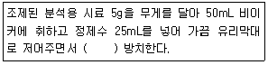
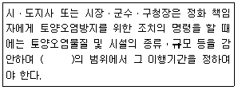
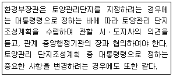
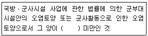

토양환경기사 (2019-09-21 기출문제)
1과목: 토양학개론
1. 유기질(식물조직)로 이루어진 늪지의 토양의 나타내는 토양목(order)은?
- AndosoI
- EntisoI
- vertisoI
- HistosoI
(정답률: 90%)

2. 일반적으로 페트라 클로로에틸렌(PCE)이 토양 중에서 분해되어 나타나는 최종 산물은?
- 트리클로에틸렌(TCE)
- 비닐클로라이드
- 물, 탄산가스, 염산
- 물, 탄산가스
(정답률: 78%)
3. 토양수분의 측정방법과 가장 거리가 먼 것은?
- 중량법
- 장력계(Tensiometer)법
- 중성자(Neutron)법
- 비중계분석법
(정답률: 68%)
4. 토양 중 유기성분의 부식작용으로 가장 거리가 먼 것은?
- 온도의 유지
- 비료 질소의 흡수
- 토양의 함수량 증대
- 토양 미생물의 에너지 공급원
(정답률: 59%)
5. 토양 콜로이드 입자의 등전점에 관한 설명으로 옳지 않은 것은?
- 콜로이드 입자 표면의 순전하가 0이 되는 용액의 pH를 말함
- pH가 등전점 보다 낮으면 콜로이드 입자 표면에 카드뮴의 흡착이 잘 일어남
- 카올린 광물의 경우 4전후의 값을 나타냄
- pH가 등전점 보다 높이면 콜로이드 입자 표면의 전하는 음전하를 나타냄
(정답률: 64%)
6. 토양에서 공극비(e)를 바르게 나타낸 것은?
- 공극내 물의 무게/토양 고상의 무게
- 공극내 물의 무게/토양 전체의 무게
- 공극의 부피/토양 고상의 부피
- 공극의 부피/토양 전체의 부피
(정답률: 69%)
7. 토양구성 입자의 직경 즉 입도분포를 결정하기 위한 분석과 가장 거리가 먼 것은?
- 비중계분석
- 비표면적분석
- 체분석
- 침전분석
(정답률: 75%)
8. 사막화의 과정인 토양의 염류집적 원인과 가장 거리가 먼 것은?
- 지하수위의 상승
- 관개수에 의한 염류의 증가
- 배수량의 저하
- 지하수 모관상승의 저하
(정답률: 73%)
9. 토양오염은 오염물질의 특성에 따라 다르게 나타난다. 유기오염물질의 특성 인자와 가장 거리가 먼 것은?
- 용해도적
- 증기압
- 옥탄물-물 분배계수
- 분해상수
(정답률: 77%)
10. 광산 활동에 의한 주변 농경지의 오염에 관련된 사항으로 가장 거리가 먼 것은?
- 일반적으로 광산배수의 pH는 강알칼리임
- 농경지 오염은 주로 방치된 광미, 광폐석에 기인됨
- 아연광산의 경우 지련과정에서 카드뮴이 부산물로 생산됨
- 중금속이 함유된 농업용수를 이용함으로써 농경지가 오염됨
(정답률: 85%)
11. 원통칼럼에 수리전도도가 0.2m/hr인 토양을 충진하여 수평으로 놓고 토양 내 기포가 생기지 않게 일정한 유량의 물을 흘려보내 주었다. 유량과 단면적의 비 값은 0.⑤m/hr이었고 칼럼전체의 수두차는 0.25m이었다. 실험에 사용한 원통 칼럼의 길이(m)는?
- 0.1
- 0.5
- 1
- 2
(정답률: 71%)
12. 두 지점의 수두차 1m, 두 지점 사이의 수평거리 800m. 투수계수 300m/day일 때 대수층의 두께 4m, 폭 3m인 지하수의 유량(m3/day)은?
- 1.5
- 3.0
- 4.5
- 6.0
(정답률: 71%)
13. 벤젠이 포화토양층에 평형상태로 용해 또는 흡착되어 있다. 지하수와 토양에서의 벤젠의 농도는 각각 10mg/L, 50mg/kg이며, 포화토양층의 부피는 2500m3이다. 토양 공극률이 0.44, 토양입자밀도가 3.50g/cm3일 경우 토양에 흡착된 벤젠의 양(kg)은?
- 215
- 225
- 235
- 245
(정답률: 45%)
14. 토양미생물 중 호기성 조건에서 생존하고 무기영양 미생물이며 질소의 고정에 관여하는 것은?
- 세균
- 방선균
- 조류
- 사상균
(정답률: 64%)
15. 토양에 투입 될 경우 지하수로의 이동성이 가장 좋은 물질은?
- 인산
- 카드뮴
- 질산태 질소
- 암모늄태 질소
(정답률: 70%)
16. 산화적 조건하에서 불용화하는 중금속으로 짝지어진 것은?
- Fe, Mn
- Cd, Fe
- Cd, Cr
- Zn, Mn
(정답률: 68%)
17. 나트륨 토양의 개량을 위해 사용할 수 있는 방법이 아닌 것은?
- 지하수위가 높은 경우 배수로 수위를 낮춘다.
- 치환성 Ca 포화도를 낮춘다.
- 내알칼리, 내침수성 식물을 재배한다.
- 깊은 우물을 파서 하토층의 물리성을 개량한다.
(정답률: 75%)
18. 점토광물 중 비표면적이 가장 작은 것은?
- Montmorillonite
- Kaolinite
- Trioctahedral Vermiculite
- Chlorite
(정답률: 74%)
19. 난분해성 유기화학물과 가장 거리가 먼 것은?
- 분자의 가지구조가 많은 화합물
- 분자 내에 많은 수의 할로겐원소를 함유하는 화합물
- 물에 대한 용해도가 높은 화합물
- 원자의 전하차가 큰 화합물
(정답률: 85%)
20. 용적밀도(Bulk Density)가 1.30g/cm3인 건조한 토양 100cm3을 중량수분함량 30%로 조절하고자 할 때 필요한 수분의 양(g)은?
- 13.0
- 30.0
- 39.0
- 130.0
(정답률: 72%)
2과목: 토양 및 지하수 오염조사기술
21. 0.⑤N의 KMnO4 용액 2000mL를 조제하고자 할 때 필요한 KMnO4의 양(g)은? (단, KMnO4의 분자량=158)
- 0.79
- 1.58
- 3.16
- 6.32
(정답률: 52%)
22. 시료의 수분측정 결과 건조된 증발접시의 무게(W1)는 20.25g, 건조 전 증발접시와 시료의 무게(W2)는 41.50g, 건조 후 증발접시와 시료의 무게(W3)는 35.50g이었다면 시료의 수분 함량(%)은?
- 42.2
- 38.2
- 32.2
- 28.2
(정답률: 70%)
23. 질산(1+1)용액을 제조할 때 설명으로 알맞은 것은?
- 1L 부피플라스크에 진한질산(HNO3, 63.01) 500mL를 넣은 다음 정제수로 정확히 1L가 되도록 채운다.
- 1L 부피플라스크에 정제수를 약 400mL를 넣은 다음 진한질산(HNO3 63.01) 500mL를 넣은 다음 정제수로 정확히 1L가 되도록 채운다.
- 1L 부피 플라스크에 진한질산(HNO3, 63.01)을 약 400L 넣은 다음 정제수 500mL를 넣은 후 진한질산으로 정확이 1L가 되도록 채운다.
- 1L 부피플라스크에 정제수를 약 500mL를 넣은 다음 진한질산(HNO3, 63.01) 400mL를 넣고 정제수로 정확히 1L가 되도록 채운다.
(정답률: 62%)
24. 6가 크롬에 작용시켜 생성하는 적자색의 착화합물의 흡광도를 540nm에서 측정하여 6가 크롬을 정량하는 방법은?
- 디에틸디티오카르바민산은법
- 디메틸글리옥심법
- 디페닐카르바지드법
- 피리딘-피라졸론법
(정답률: 76%)
25. 유기인화합물 기체크로마토그래피-질량분석법으로 분석할 때, 사용하는 정제용 컬럼으로 틀린 것은?
- 실리카겔 컬럼
- 플로리실 컬럼
- 활성탄 컬럼
- 알루미나 컬럼
(정답률: 69%)
26. 원자흡수분광분석방법에서 방해물질을 최소화 하는 방법이 아닌 것은?
- 적절한 파장 선택
- 이온교환이나 용매추출 등을 통한 방해물질제거
- 음이온 또는 킬레이트 첨가
- 내부 표준법 사용
(정답률: 64%)
27. 저장물질이 없는 누출검사대상시설-가압시험법을 적용하여 누출 검사를 할 때 주의사항과 가장 거리가 먼 것은?
- 가압으로 배출된 가스를 별도로 안전한 공간으로 이동시킨다.
- 기상변화가 심할 때는 시험을 실시하지 않는다.
- 누출여부판단을 위한 누출검사대상시설의 가압을 위해서 과도한 속도로 압력이 상승되지 않도록 한다.
- 시험기간 동안 화기의 사용을 금한다.
(정답률: 76%)
28. 용액 100mL 중의 성분 무게(g)를 백분율로 표시할 때 사용하는 농도표시 기호는?
- g/L
- mg/L
- V/V(%)
- W/V(%)
(정답률: 77%)
29. PCB를 기체크로마토그래피법으로 정량화 할 때에 관한 내용으로 틀린 것은?
- PCB를 노말헥산으로 추출한다.
- 추출액은 실리카겔 또는 다층실리카겔을 통과시켜 정제한다.
- 검출기는 전자포획검출기(ECD) 또는 이와 동등 이상의 검출성능을 가진 것을 사용한다.
- 운반기체는 네온 또는 수소를 이용한다.
(정답률: 61%)
30. pH 값이 20℃에서 가장 낮은 값을 나타내는 pH 표준액은?
- 수산화칼슘 표준액
- 탄산염 표준액
- 인산염 표준액
- 붕산염 표준액
(정답률: 67%)
31. 유도결함플라스마-원자발광분광법에서 플라스마 가스로 사용되는 것은?
- 수소
- 질소
- 아르곤
- 헬륨
(정답률: 78%)
32. 누출검사대상시설에 대한 용어 설명으로 틀린 것은?
- 부속배관:누출검사대상시설에 용접 또는 나사조임방식으로 직접 연결되는 배관을 말한다.
- 지하매설배관:부속배관의 경로 중 지하에 매설되어 누출여부를 육안으로 직접 확인할 수 없는 배관을 말한다.
- 배관접속부:누출검사대상시설과 부속배관, 부속배관과 배관을 연결하기 위하여 용접접합 또는 나사조임방식 등으로 접속한 부분을 말한다.
- 누출검지관:기체의 누출여부를 누출검사대상시설 내부에서 직접 또는 간접적으로 확인하기 위해 설치한 관을 말한다.
(정답률: 73%)
33. 토양에 함유되어 있는 중금속 성분을 분석하기 위하여 조제할 때 사용되는 표준체가 다른 성분은?
- 납
- 구리
- 6가 크롬
- 비소
(정답률: 69%)
34. 토양오염관리대상시설 지역 중 시료 채취 및 보관방법에 관한 설명으로 가장 거리가 먼 것은?
- 토양시료는 직경 2.0cm 이하의 시료채취봉이 들어있는 토양시추장비로 채취한다.
- 시료채취 봉을 꺼내어 오염의 개연성이 가장 높다고 판단되는 부위 ±15cm를 시료부위로 한다.
- 토양시추장비는 시추 중에 물이나 기름이 유입되지 않는 것이어야 한다.
- 토양시추장비는 시료채취 봉이 들어있는 타격식이나 나선형식이 있다.
(정답률: 73%)
35. 방울수란 20℃에서 정제수 20방울을 적하할 때 그 부피가 몇 mL가 되는 것을 뜻하는가?
- 약 0.5mL
- 약 1.0mL
- 약 2.0mL
- 약 5.0mL
(정답률: 79%)
36. 페놀류를 기체크로마토그래피로 정량할 때 추출용액은?
- 아세톤/메틸알콜(1:1)
- 사염화탄소/메틸알콜(1:2)
- 아세톤/노말헥산(1:1)
- 사염화탄소/아세톤(2:1)
(정답률: 70%)
37. 자외선가시선분광법에서 투과율 35%시 흡광도는?
- 0.35
- 0.38
- 0.41
- 0.46
(정답률: 60%)
38. 기체크로마토그래피를 이용하여 분석할 수 있는 물질로 짝지은 것은?
- PCB, 수은
- 유기인화합물, TPH
- BTEX, 비소
- 불소, TPH
(정답률: 63%)
39. 정도보증/정도관리에 적용되는 감응계수의 산정식으로 옳은 것은? (단, C:검정곡선 작성용 표준용액의 농도, R:반응값)
- 감응계수=C/R
- 감응계수=R/C
- 감응계수=R×C
- 감응계수=R2×C
(정답률: 75%)
40. 토양의 pH를 측정(유리 전극법)하기 위한 분석절차에 관한 내용으로 ()안에 알맞은 것은?

- 10분
- 15분
- 30분
- 1시간
(정답률: 72%)
3과목: 토양 및 지하수 오염정화 기술
41. 생물학적통풍법을 적용하기 위해 검토해야 하는 토양의 주요인자가 아닌 것은?
- 고유투수계수
- 지하수위
- 양이온 교환능력
- 토양미생물
(정답률: 65%)
42. 토양정화기술 중에서 Ex-situ 정화기술과 가장 거리가 먼 것은?
- 토양세정법(soil flushing)
- 용제추출법(solvent extraction)
- 퇴비화법(composting)
- 할로겐분리법(glycolate dehalogenation)
(정답률: 72%)
43. 토양증기추출법을 적용하기 위해 오염부지 내 존재하는 총 오염물질 양을 계산하고자 한다. 다음 중 계산과정에 없어도 무방한 특성값은?
- 토양단위용적밀도
- 오염물질의 핸리상수
- 토양입경
- 수분함량비
(정답률: 57%)
44. 토양증기추출법으로 오염물을 제거하는 경우, 추출정으로부터 배출되는 가스의 오염물농도는 10mg/L였다. 특정 유기오염물의 대기방출허용 농도가 1mg/L이기 때문에 추출정의 배출가스를 생물막필터 후처리 공정을 이용하여 배출가스 농도를 대기방출허용농도까지 낮추려고 한다면, 생물막필터 공정의 제거효율은 최소 몇 % 이상이어야 하는가?
- 60% 이상
- 70% 이상
- 80% 이상
- 90% 이상
(정답률: 72%)
45. 저온열탈착법의 적용인자에 대한 설명으로 틀린 것은?
- 토양의 함수율이 높으면 유동성이 좋아 정화효율이 상승한다.
- 오염토양 내에 납 등 중금속이 포함된 경우 후단 처리시설에 주의를 요한다.
- 조대물질의 경우에는 기계적인 무리를 줄 수 있어 전처리가 필요하다.
- 노농도 유류 오염토양에 적용성이 우수하다.
(정답률: 69%)
46. 총 3기의 유류저장 탱크가 설치된 탱크박스에서 2기의 15000L와 1기의 20000L저장 탱크를 제거하였다. 탱크박스 부피는 500m3이며 박스 내 토양이 오염되었다. 탱크박스ㆍ내오염토양의 굴토 양(ton)은? (단, 토량환산계수=1.1, 굴토 전 원지반의 밀도=1.8g/cm3, 굴토 후 오염토양의 밀도=1.64g/cm3)
- 750.4
- 788.4
- 811.8
- 926.1
(정답률: 50%)
47. 지중 생물학적 처리(in-situ Bioremediation)기술에 대한 설명으로 틀린 것은?
- 투수성이 낮은 대수층에서는 적용하기 어렵다.
- 용해도가 높고, 농도가 높은 경우는 생물학적 분해가 불가능하다.
- 지하수에 용해되어 있거나 대수층에 흡착된 휘발성 유기화합물에 효과적이다.
- 수리전도도가 10-4cm/s 이상인 대수층에서 효과적이다.
(정답률: 49%)
48. 토양오염지역을 bioventing기술로 처리하고자 한다. 대상부지의 산소소모율을 계산하기 위해 평균공극률이 0.4인 토양 100m3을 대상으로 조사를 실시하였다. 주입공기의 유량은 50m3/day, 초기의 산소농도 21%가 배기가스로 배출될 때 11%로 떨어졌을 때 산소소모율(% O2/day)은?
- 약 8.5
- 약 12.5
- 약 16.5
- 약 25.5
(정답률: 63%)
49. 공장 내 토양오염 정밀조사를 위해 토양시료를 깊이 3m 간격으로 채취하였다. 각 깊이별 오염 면적은 지표로부터 3m 깊이까지 500m2, 3m 깊이에서 6m 깊이까지 600m2, 6m깊이에서 9m 깊이까지 700m2로 조사되었다. 겉보기 비중이 1.7ton/m3인 오염토양의 총무게(ton)는?
- 12420
- 9180
- 5940
- 7920
(정답률: 65%)
50. 토양세척공정에 관한 설명으로 가장 거리가 먼 것은?
- 외부환경의 영향이 크며 자체적 조건조절이 가능한 개방형 공정이다.
- 오염된 처리수는 폐수처리시설에서 정화된 후 재순환 되는 것이 일반적이다.
- 토양세척의 효과를 결정짓는 것은 물질의 종류에 의한 차이보다 토양의 성상에 따른 영향이 크다.
- 오염물질의 물리화학적 특징 중 세척효율을 높일 수 있는 요인은 수용성과 휘발성이다.
(정답률: 72%)
51. 오염토양을 열탈착공정으로 정화하고자 할 때 공정 설계에 필요하지 않은 참고 기준치는?
- 토양의 비열
- 토양의 증발열
- 물의 비열
- 물의 증발열
(정답률: 62%)
52. 토양세척기법(soil washing)이 가장 효과적인 토양은?
- 점토가 주를 이루는 토양
- 모레와 자갈이 고루 섞인 토양
- 실트와 모래가 고루 섞인 토양
- 점토와 실트가 오루 섞인 토양
(정답률: 77%)
53. 자연저감법을 이용하여 지하수중의 BTEX를 처리할 경우, 생분해가 진행됨에 따라 전자수용체 변화양상의 설명으로 틀린 것은?
- 용존산소 감소
- NO3- 감소
- 철(3가) 증가
- SO42- 증가
(정답률: 55%)
54. 지하저장탱크에서 톨루엔이 누툴되어 부지조사 결과 탱크 주변의 오염된 토양의 부피가 110m3, 평균 톨루엔 농도가 2000mg/kg일 때 해당 부지에 오염된 톨루엔의 총 함량(kg)은? (단, 토양의 용적밀도=1.5g/cm3)
- 330
- 447
- 584
- 640
(정답률: 68%)
55. 오염 토양을 열처리하여 복원하는 대표적인 열탈착 장치의 종류가 아닌 것은?
- 열스크루 탈착장치
- 로터리 탈착장치
- 세정식 탈착장치
- 유동상 탈착장치
(정답률: 79%)
56. 토양오염 처리기술의 개념에 관한 설명으로 옳지 않은 것은?
- Biodegradation-미생물을 활용하여 유기오염물질을 분해
- Dual Phasa Extraction-유기오염물질과 중금속을 동시에 제거하기 위해 고압의 수증기를 주입
- Pneumatic Fracturing(PF)-통기성이 낮거나 압밀된 토양에 균열을 증가시키기 위해 지표 아래로 압축공기 주입
- Vitrification-오염토양을 전기적으로 용융시켜 용출특성이 낮은 결정구조로 만듦
(정답률: 63%)
57. 오염부지에 자연저감관측법을 적용하여 오염운을 모니터링하였다. 다음 중 오염원으로부터 가장 멀리 떨어진 지역의 오염운에서 지배적으로 일어나는 자연저감과정은?
- 3가철 환원
- 탈질화
- 황산염 환원
- 메탄산화
(정답률: 69%)
58. 생물학적 산화환원반응의 종류 중 에너지 효율이 가장 좋은 것은?
- 황산염 환원
- 호기성 호흡
- 메탄 발효
- 질산염 환원
(정답률: 75%)
59. 생물학적 복원공법을 적용하여 오염토양을 처리하고자 할 때 필요한 중요 환경조절인자와 가장 거리가 먼 것은?
- 전자 수용체
- pH
- 토양밀도
- 영양물질
(정답률: 56%)
60. 토양의 열처리 기술인 열탈착 기술에 관한 설명으로 틀린 것은?
- 휘발성 유기화합물의 처리효율이 분휘발성 유기화합물의 처리효율보다 낮다.
- 토양으로부터 검출한계 이하로 유기염소 및 유기인 살충제의 제거가 가능하다.
- 토양으로부터 검출한계 이하로 휘발성 유기화합물의 제거가 가능하다.
- 다양한 수분함량과 오염농도를 가진 여러 종류의 토양에 적용이 가능하다.
(정답률: 62%)
4과목: 토양 및 지하수 환경관계법규
61. 토양관련전문기관의 준수사항이 아닌 것은?
- 토양시료채취는 토양관련전문기관 지정 시 신고된 기술요원이 하여야 한다.
- 토양관련전문기관은 도급받은 토양관련 전문기관의 업무 일부를 하도급 할 수 있다.
- 토양관련전문기관은 매년 1월 31일까지 전년도 검사실적을 지방환경관서의 장에게 보고하여야 한다.
- 토양시료의 분석은 형식승인과 정도검사를 받은 장비를 사용하여 분석하여야 한다.
(정답률: 70%)
62. 토양보전기본계획에 포함되어야 할 사항으로 가장 거리가 먼 것은?
- 토양보전에 관한 시책방향
- 토양오염의 방지에 관한 사항
- 토양정화 및 정화된 토양의 이용에 관한 사항
- 토양오염 현황 및 측정에 관한 사항
(정답률: 60%)
63. 지하수를 공업용수로 사용할 경우 수소이온농도(pH)의 수질 기준은?
- 1.0~3.0
- 3.5~5.5
- 5.0~9.0
- 8.5~12.0
(정답률: 77%)
64. 특정토양오염관리대상시설별 토양오염검사항목 중 유해화학물질의 제조 및 저장시설의 검사 항목이 아닌 것은?
- 에틸벤젠
- 카드뮴
- 유기인화합물
- 트리클로로에틸렌
(정답률: 42%)
65. 토양오염도 측정에 관한 사항으로 맞는 것은?
- 지방환경청장은 관할지역의 토양오염시태를 파악하기 위하여 측정망을 설치하고 토양오염도를 상시측정하여야 한다.
- 시ㆍ도지사는 관할구역안의 토양오염실태를 파악하기 위하여 토양정밀조사를 한다.
- 토양오염우려기준을 넘을 가능성이 크다고 인정되는 지역에 대해 환경부장관, 시ㆍ도지사 또는 시장ㆍ군수ㆍ구청장이 토양오염정밀조사를 실시할 수 있다.
- 시장ㆍ군수ㆍ구청장은 토양오염실태조사결과를 환경부장관에게 바로 보고하여야 한다.
(정답률: 56%)
66. 토양오염방지를 위한 조치명령에 관한 내용으로 ()안에 알맞은 것은? (단, 연장기간은 고려하지 않음)

- 3월
- 6월
- 1년
- 2년
(정답률: 51%)
67. 오염지하수정화계획 수립 시에 고려할 사항이 아닌 것은?
- 정화대상지역 선정
- 적용성 시험
- 오염지역 부동산 시세
- 정화사업의 규모
(정답률: 78%)
68. 토양환경보전법에서 사용하는 용어의 정의로 옳지 않은 것은?
- 토양오염물질:토양오염의 원인이 되는 물질로서 환경부령이 정하는 것을 말한다.
- 특정토양오염관리대상시설:토양을 현저히 오염시킬 우려가 있는 토양오염관리대상시설로서 환경부령이 정하는 것을 말한다.
- 토양정화:생물학적 또는 물리ㆍ화학적 처리등의 방법으로 토양 중의 오염물질을 감소ㆍ제거하거나 토양 중의 오염물질에 의한 위해를 완화하는 것을 말한다.
- 토양오염관리대상시설:토양오염물질을 생산ㆍ운반ㆍ저장ㆍ취급ㆍ가공 또는 처리 등으로 토양을 오염시킬 우려가 있는 시설ㆍ장치ㆍ건물ㆍ구축물 및 그 밖에 지자체장이 정하는 것을 말한다.
(정답률: 70%)
69. 토양정화업의 등록요건 중 장비에 관한 기준으로 틀린 것은?
- 현장용 수질측정기 1식(pH, 수온, 전기전도도, 용존산소. 산화환원전위의 측정이 가능할 것)
- 휴대용 가스측정장비 1식(VOC, 산소, 이산화탄소 및 메탄의 측정이 가능할 것)
- 시료채취기 1대(깊이 6미터 이상 시료채취가 가능할 것)
- 자가동력시추기(타격식이나 나선형식으로 시추깊이가 최소 6미터 이상일 것)
(정답률: 60%)
70. 지하수관리 기본계획에 포함되어야 할 사항이 아닌 것은?
- 지하수의 이용실태 및 계획
- 지하수의 부존 특성 및 개발 가능량
- 지하공간 개발계획
- 지하수의 수질관리 및 정화계획
(정답률: 65%)
71. 다음에서 언급한 ‘대통령령으로 정하는 중요한 사항을 변경하는 경우’에 관한 내용(기준)으로 옳은 것은?

- 오염토양 정화처리 용량의 20퍼센트를 초과하여 변경하려는 경우
- 오염토양 정화처리 용량의 25퍼센트를 초과하여 변경하려는 경우
- 오염토양 정화처리 용량의 30퍼센트를 초과하여 변경하려는 경우
- 오염토양 정화처리 용량의 35퍼센트를 초과하여 변경하려는 경우
(정답률: 66%)
72. 특정토양오염관리대상시설의 양도ㆍ임대 등으로 인하여 그 시설의 운영자가 달라지는 경우에는 변경일 몇 개월 전부터 변경일 전일까지의 기간 동안에 토양오염도검사를 받아야 하는가?
- 1개월
- 3개월
- 6개월
- 12월
(정답률: 56%)
73. 환경부장관이 관계중앙행정기관의 장 또는 시ㆍ도지사에게 요청할 수 있는 조치와 가장 거리가 먼 것은?
- 토양오염방지를 위한 객토 등 농토배양사업
- 산업시설 등의 조치로 인하여 훼손된 토양의 복구
- 주변토양을 오염시킬 우려가 있는 시설에 대한 이전
- 폐광지역의 광물 찌꺼기 등으로 인한 주변농경지 등의 광산공해방지대책
(정답률: 59%)
74. 토양보전이 필요하다고 인정되는 지역에 대해 토양정밀조사를 명할 수 있는 자가 아닌 것은?
- 군수와 구청장
- 토양관련전문기관장
- 도지사 또는 시장
- 환경부장관
(정답률: 73%)
75. 토양정화업에 관한 설명 중 맞는 것은?
- 토양정화업자는 도급받은 토양정화 극대화를 위해서 일괄하여 하도급할 수 있다.
- 정당한 사유 없이 2년 이상 영업 실적이 없는 때는 그 등록은 1년 이내의 기간동안 영업정지를 받을 수 있다.
- 등록의 취소를 받은 자는 그 처분이 있기 전에 착공한 토양정화공사는 시공할 수 있다.
- 토양정화업자의 지위를 승계한 자는 승계한 날로부터 14일 이내에 환경부장관에게 신고하여야 한다.
(정답률: 54%)
76. 지하수개발ㆍ이용허가의 유효기간은?
- 3년
- 5년
- 7년
- 10년
(정답률: 64%)
77. 오염원인자가 토양정화업자에게 위탁하지 아니 하고 직접 정화할 수 있는 경우의 기준으로 ()안에 들어갈 내용으로 옳은 것은?

- 5세제곱미터
- 10세제곱미터
- 25세제곱미터
- 50세제곱미터
(정답률: 65%)
78. 오염토양의 정화책임자와 가장 거리가 먼 것은?
- 토양오염물질의 누출ㆍ유출ㆍ투기ㆍ방치 또는 그 밖의 행위로 토양오염을 발생시킨 자
- 토양오염의 발생 당시 토양오염의 원인이 된 토양오염관리대상시설의 소유자ㆍ점유자 또는 운영자
- 합병ㆍ상속이나 그 밖의 사유로 정화책임의 권리ㆍ의무를 포괄적으로 승계한 자
- 해당 토지를 소유 또는 점유하고 있는 중에 토양오염이 발생한 경우로서 자신이 해당 토양오염 발생에 대하여 귀책사유가 없는 경우
(정답률: 79%)
79. 30일 이내에 특정 토양오염관리대상시설의 변경신고 대상이 아닌 것은?
- 사업장의 명칭 또는 대표자가 변경되는 경우
- 특정토양오염관리대상시설의 사용을 종료하거나 폐쇄하는 경우
- 특정토양오염관리대상시설에 저장하는 오염물질을 변경하는 경우
- 저장용량을 신고용량 대비 20퍼센트 이하 증설(신고용량 대비 30퍼센트 미만의 증설이 누적되어 신고용량의 30퍼센트 이하가 되는 경우)하는 경우
(정답률: 59%)
80. 시ㆍ도지사가 실시하는 오염토양개선사업에 해당되지 않는 것은?
- 객토 및 토양개량제의 사용 등 농토배양사업
- 오염된 수로의 준설사업
- 오염토양 부지의 정지사업
- 오염토양의 위생매립사업
(정답률: 65%)